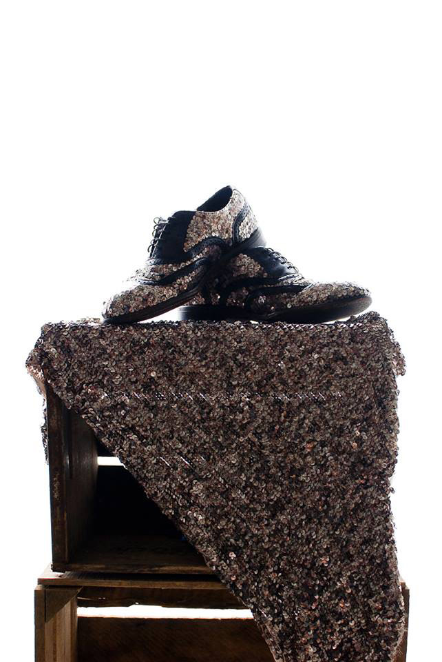
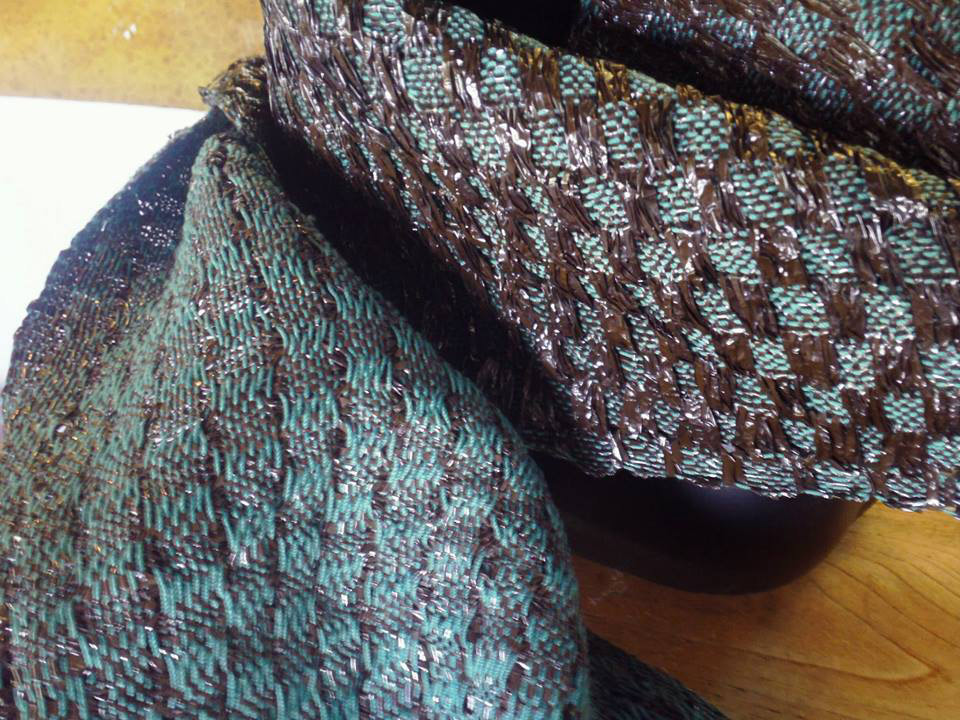

Timothy Westbrook
Fashion can be garbage, and it can be art. That transformation takes place in 24 year old Timothy Westbrook’s studio in downtown Milwaukee. He is most known for his intricate weavings of ball gown, scarves and jackets made out of old plastic bags and cassette tape film, or his shoe sequins made entirely from hole punched soda cans. Timothy Westbrook doesn’t think of himself as a fashion designer, he calls himself a sustainable fiber artist. His clothes are wearable art, and it just so happens they are made completely from recycled goods. He likes to take the history of what something was, and create something new.
His shows are like going to the theatre. He says he wants it to be like the opera- over the top, elegant, productions with a back story. His shows and clothes read like period pieces set place in a modern day Victorian Era, the future, or in the case of his most recent show, Palentology of a Woman, in prehistoric eras, complete with women with dinosaur headdresses, and shoes with teeth. Models often play the part. The back story is even more elaborate in relation to dinosaurs being the ancestors to fossil fuels. All the inner workings of the mind of a complex Timothy Westbrook.
Westbrook got his first loom in 8th grade, and began weaving at at an early age in Upstate New York, where he is originally from. He said growing up living in what he calls, the middle of the woods, a place where unicorns could absolutely exist, recycling was just something you did. He describes his process as more of a neuroses towards not wanting to waste anything, even as a young child.
He was an expressive, creative, imaginative child, always grabbing the old curtains in the living room and draping it around himself to create a gown, wearing his racerback tank tops backwards so that the racerback was front and center, chasing unicorns and chasing dreams. Westbrook hasn’t changed much, but he has certainly evolved in his skills and craft since then.In 2012, Westbrook was selected to be the Pfister Artist in Residence in Milwaukee, Wisconsin. Excited, fresh, and humbled he accepted the offer to head off to a place he had never been, but has been embraced so much that he feels as though this is his home, and the city deemed it so. Most would think that coming from New York State, New York City would be the obvious choice for him to aspire to be, but he revels in the fact that he was invited here. He said 2012 was his best year because of that experience alone.
2013 would be forever remembered to him as a whirlwind, a year of loss, lessons and tremendous growth. In 2012 Westbrook’s grandfather passed away, and days after his memorial he was set to go film Season 12 of Project Runway. The same grandfather who so much of his work was interwoven with, figuratively and literally. His grandfather was blind and Westbrook used his audio cassette books on tape in his weavings.He had a tumultuous time on the show, full of highs and lows, he came in excited only to be left feeling completely defeated, but he says he learned a great deal from the experience, taking charge, and owning himself and his ideas. With 20 events already in the books for 2014, it looks like this year will also be another year to remember. Right now he is experimenting with his different skills and styles, like trying his hand at menswear, a suggestion made by Nina Garcia, while also preparing for his next big show Legacy in March.
amfm: Why do you identify as a sustainability driven artist rather than a fashion designer? You once said fashion is waste.
Timothy Westbrook: I think that sustainability is a lifestyle. There was a big push for me in undergrad to combine the stories of sustainability in with what I was doing, and now it’s just the practice. I think that I just want to do stories and be like “by the way everything that you just saw is totally good for the environment and has zero impact and doesn't hurt anything.” I've said more recently that the environmental society doesn't need another ready to wear fashion designer, that’s what Goodwill and Salvation Army are for- that’s sustainability-based, ready to wear. I consider myself an artist because I’m making one of a kind art pieces. The process is where sustainability happens. When I make a raincoat out of an umbrella, or I make fabric out of cassette tape, I hope that the way that I’m thinking about it is inspiring other people in other fields to make more influential decisions. When you go into fashion design, it is very product driven and consumer driven, and profit driven, and if you’re just trying to convince someone- trying to sell something, that they don’t need- what if we just made a pair of shoes that lasted forever? And then took the other shoes that were falling apart and made new shoes out of them, versus making brand new shoes?
amfm: So you approach making each piece as like a piece of art? Do you come up with the idea first or let something speak to you?westbrook: My process has really evolved in the last two years, and I’m also still a baby, so I’m still inventing my process as I go. I start with a full concept of a show. What is the point of the show? What is the story that I want to do? And then what I do is go through all of the materials that I have and then fill in the gaps from there. The project that I’m working on now is for a show I’m doing March 19th. I had an artist say I’d love to collaborate with you, and I was like “oh my gosh I would love to make a dress out of your old painting,” and so me taking the paintings, as sort of like their cast off art waste if you will, it doesn't necessarily inform the story of the concept of the show, but it forces me to use those materials for the show because those are the materials that I have. So I think I sort of blend everything together, but try to be really thoughtful about it. My biggest concern has been that people are dropping off their garbage, so people who give me things like soda cans, or umbrellas, or old fabric or plastic bags, these are people who are already going to make the trip to Goodwill or are already going to recycle, so what I need to do is to be making a more proactive change. I hope that from these projects on that as I accumulate more material it’s from actual garbage pick ups, and that I am making clothing out of the garbage that I pick up- like making a more direct change than sort of just reimagining. There’s one thing of repurposing things, and then the added step of making that difference.
amfm: How did you first get started making things and repurposing materials?westbrook: When you are a little kid and you put on a bed sheet and then a pot or a pan on your head, you’re royalty from somewhere, and that’s really what this all this taps into, is just playing dress up. Making other stuff into stuff. Playing dress up when I was a little kid, I was like ripping the curtains right off from the wall and my mom would come in and be like “what are you doing?” My mom would tell people stories of her standing at the bottom of the stairs yelling “stop dancing in front of the mirror and get ready for school!” I was always playing and always exploring. My grandmother taught me how to hand sew when I was five, and my mom used to keep a lot of recyclables in a bag that was always our craft bag, and I was always obsessed with the skeletons made out of milk cartons and the condensed juice cans. We’d keep the lids and with a hammer and nail make Christmas ornaments, so just lots of things like that. I’m from Upstate New York in the middle of the woods so recycling is sort of a thing that just happens, you use everything. And I don’t know why I’ve always had that Great Depression attitude of use absolutely everything. Everything has a use, why throw it away? I’m noticing that really I just have a neuroses. What it really comes down to is I’m like a crazy hoarder and I have like an environmentalist anxiety. I have like these completely crazy idiosyncrasies, and so my art is now exploring that.
amfm: So it sounds like it happened sort of organically?
westbrook: It’s been a fun process. I went to college at Syracuse University for fashion design originally, and on my very first day, before there were even classes, someone told me a.) that they had never met a gay person before, and b.) that they had never shopped at a thrift store ever and never would, and that fascinated me. I’ve always been really interested in where people are coming from, like I’ve never had a phobia of homophobes, I’ve always respected them and have tried to understand what their perspective is because they grew up in a place thinking this and you can’t be mad at them. I just try to get to the bottom of why they think the way that they do, so I was always really fascinated by this chick who thinks this. What I have accidently done is the closer that I have gotten to actual garbage as refuse, the more beautiful my pieces have sort of become because of this transformation, and the more luxurious they are. So the girl who wouldn’t buy something from a thrift store would buy these shoes for $500, which is crazy because all it is is thrift store shoes and soda cans. I think topically it’s a caricature of itself, and I’ve said that before about my work, that my work is sort of a caricature of luxury, because I’m making really beautiful pieces out of like old curtains.
amfm: Do you face any challenges?westbrook: I think the biggest thing is figuring out why, what is your goal for doing something, and why do you want to do it, and what’s the point of doing it, and what are you trying to achieve and what do you wish you could achieve. I mean that too monetarily, what do you hope to get out of this, what do you need to get out of it, but also what do you need out of yourself. I think the biggest challenge is constantly checking in with yourself. A challenge that I’m sort of over is recognizing that being an artist you also have to be a business person, and then recognizing the difference between friends and customers. I had a really good sentence that I’m probably gonna butcher, it’s “a healthy business means that you need to have customers not friends, but a healthy me needs friends, not customers.” I think that’s where I am at a little bit of a paradox right now, like I want to move forward...I think a lot of young artists deal with that sort of struggle with like money versus craft, and like getting paid, and getting paid the right way. I think that’s definitely a big challenge, cause I don’t have a job and April first will be two years of solely just being a practicing artist, it’s really crazy!
amfm: Can you talk a bit the cassette tape weavings you do?westbrook: When I was in 8th grade was when I got my first table top loom and I wove a plastic bag belt. It was a wearable recycled art fashion show and I won three trophies, and I thought I was so cool. And I hand sewed the whole thing with the cassette tape cause I convinced myself, I couldn’t let anything go to waste, again with this neuroses thing, I’m like 13, but it was my first time using cassette tape. I took a weaving class my junior year [in college], it was more about technique, so we didn’t get to do anything conceptual, but when I did my first weaving my senior year, it was for the Magic Flute Opera, and the character that it was for was Papageno, who is the bird catcher to the queen of the night and he had to sing, so I was thinking visual music, so the idea of the cassette tape came. To break it down- books on tape is taking something visual and making it audio, and then by weaving with it I’m making the audio back into a visual again, but it’s also very tactile. Over all its just a very sensory experience. And to go a bit further, a cassette tape and a loom work in the exact same reel to reel. It’s a giant cassette tape.
amfm: What did you learn from your experience on Project Runway?
westbrook: The biggest thing was I did it because I could, and not a lot of people can say they can. It’s one of those things that I can say I’m just grateful for the fact that I had the experience. I learned that I have to stick up for myself. It goes back to that thing about advocating for yourself, figuring out why you’re doing this, what is it for, what do I need?
amfm: What is it about Milwaukee that has made you stay here and why practice your craft in Milwaukee?westbrook: That has changed dramatically since I left the Pfister, because I have one perception and things have changed, I’ll be very frank with you. Someone said and put it really well, is that for me specifically, because I’m a little bit of a niche, it’s really hard to sponsor me or fund me. It’s hard to help me financially here and there’s no job that can really take advantage of all of my talents here so it’s really difficult, but Milwaukee will have me. Milwaukee is excited about what I’m doing. They’re interested in what I’m doing. There’s such a phenomenal support. Everybody is like pro-Wisconsin, like if you’re from here you LOVE Wisconsin, and that’s great. I actually re-wrote a letter to the selection panel when I was chosen to do the residency and I said, “I didn’t realize how much of a community there was here, and how high the art community was” sort of saying like thank you, but also I understand, let me further clarify why I want this. I think the best way to come to a new city is by invitation, and I was essentially invited, and that’s really exciting.
There was a lot of talk about hometown rivalries in response to Project Runway with me and Miranda and my response was, thank you because I’m not from here. And that is sort of like bigger than extending the invitation. I was told this is your home. If the Artist in Residence program hadn’t have brought me in, everything that I went into that audition with was something that I made at the Pfister, so I owe all of my success to Milwaukee.
westbrook: I grew up in the middle of the woods. I grew up in a place where unicorns could absolutely exist. And there’s some dark things in my life that have happened and I have to believe that unicorns can exist in order for those things to be okay. I also think that people have lost touch with nature, specifically with my generation, we’re a disney generation and the disney world isn’t real. The Wizard of Oz, Harry Potter, Narnia, Neverland, none of those places don’t really exist, but they’re in the middle of the woods.
|  |  |
For more on Timothy Westbrook:
https://www.facebook.com/TimothyWestbrook
photo credit: Timothy Westbrook, Chris Siegel